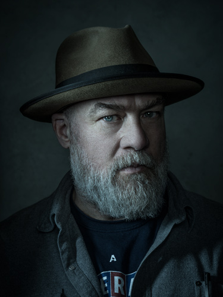

After studying photography Moorpark College in Southern California, Dan Winters finished his formal education at the documentary film school at Ludwig Maximilian University of Munich, Germany. He began his career in photography as a photojournalist in his hometown in Ventura County, California.
After winning several regional awards for his work, he moved to New York City, where magazine assignments came rapidly. Known for the broad range of subject matter he is able to interpret, he is widely recognized for his unusual celebrity portraiture, his scientific photography, photo illustrations, drawings and photojournalistic stories. 
Winters has won over one hundred national and international awards from American Photography, Communication Arts, The Society of Publication Designers, PDN, The Art Directors Club of New York, Life Magazine.
He was awarded a World Press Photo Award in the Arts and Entertainment category in 2003. He was also awarded the prestigious Alfred Eisenstaedt Award for Magazine Photography. In 2003, he was honored by Kodak as a photo “Icon” in their biographical “Legends” series.